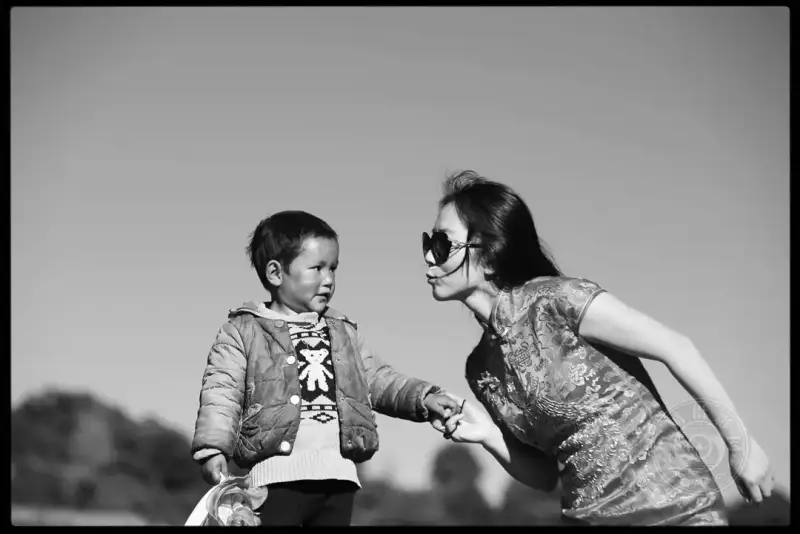
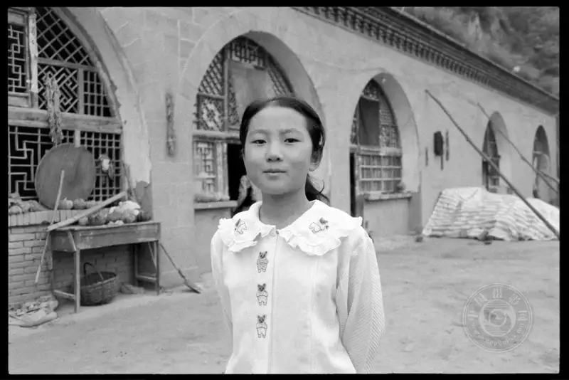
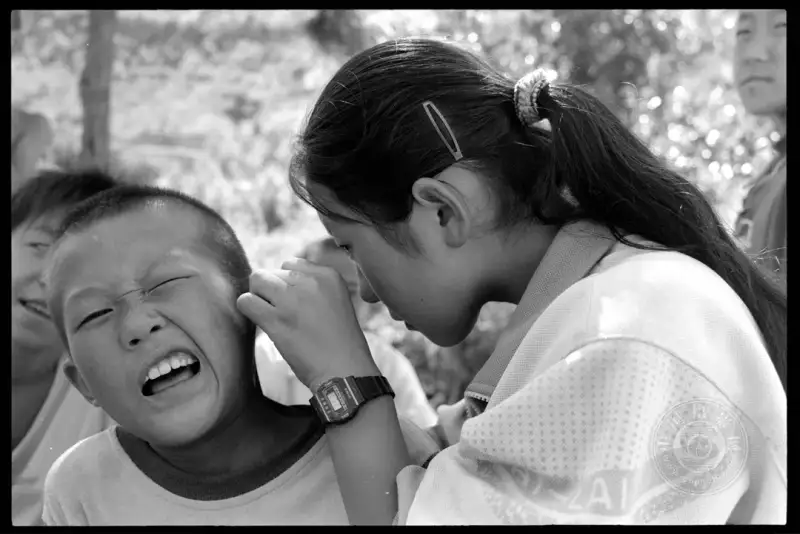
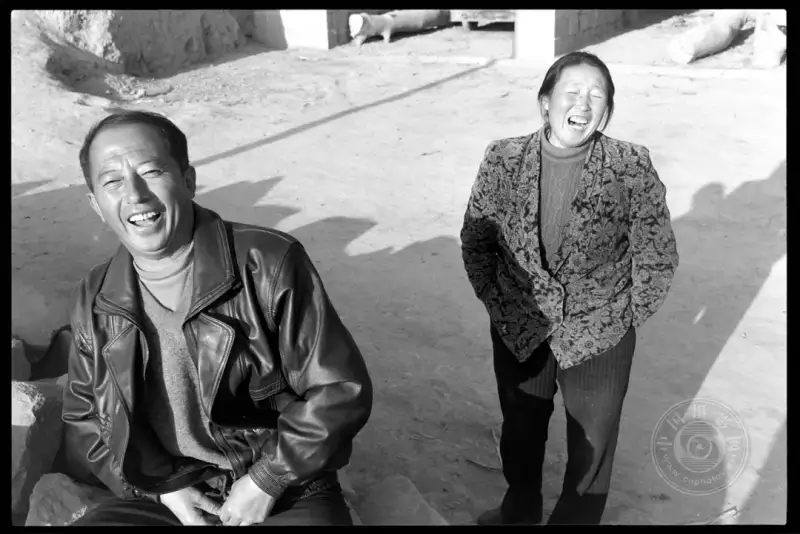
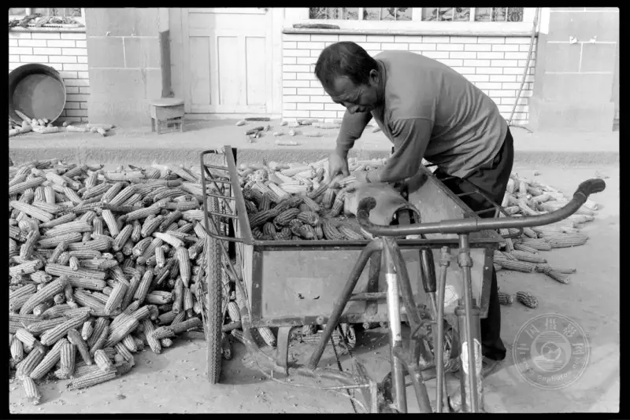
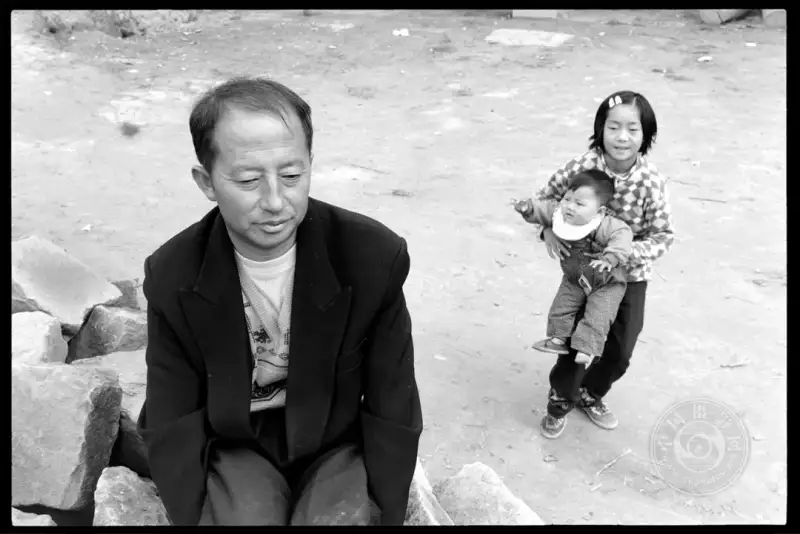
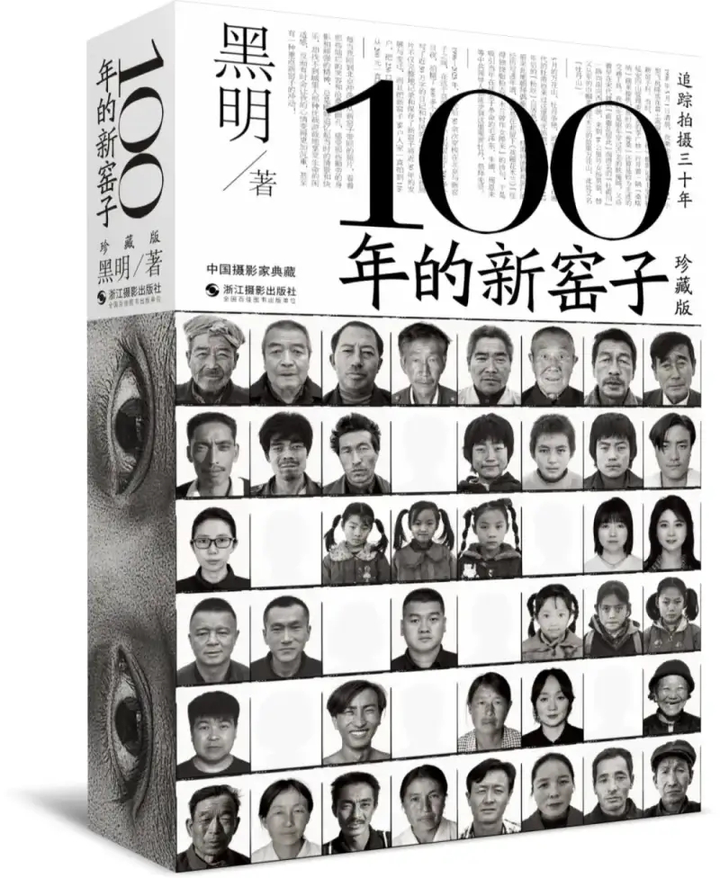
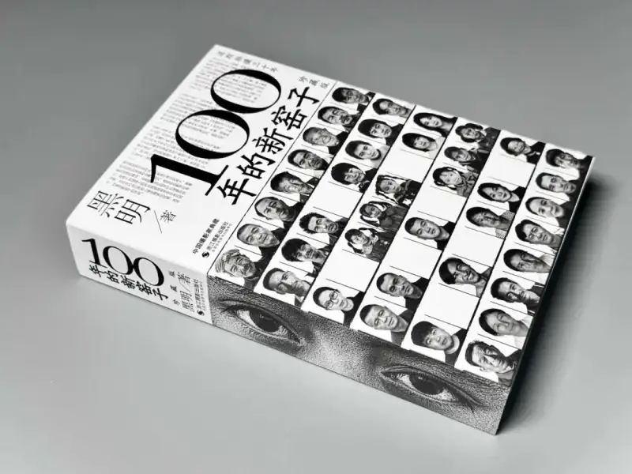
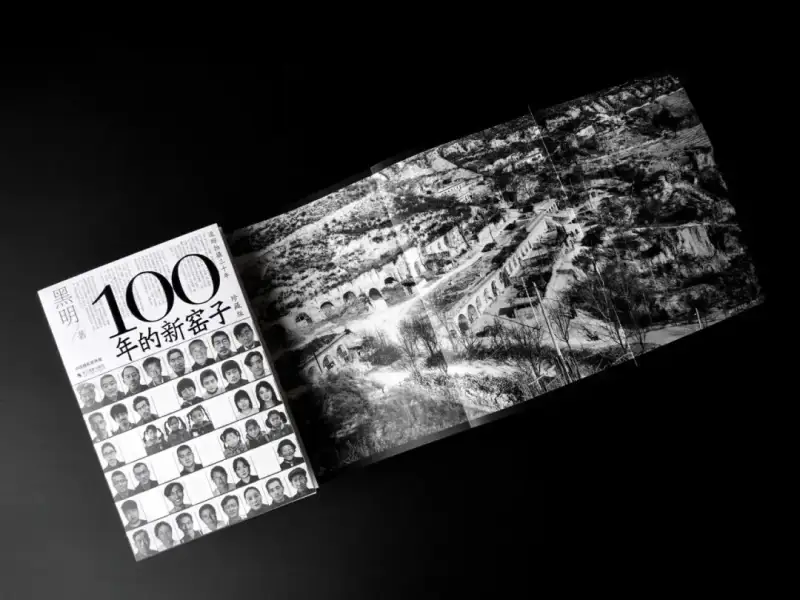
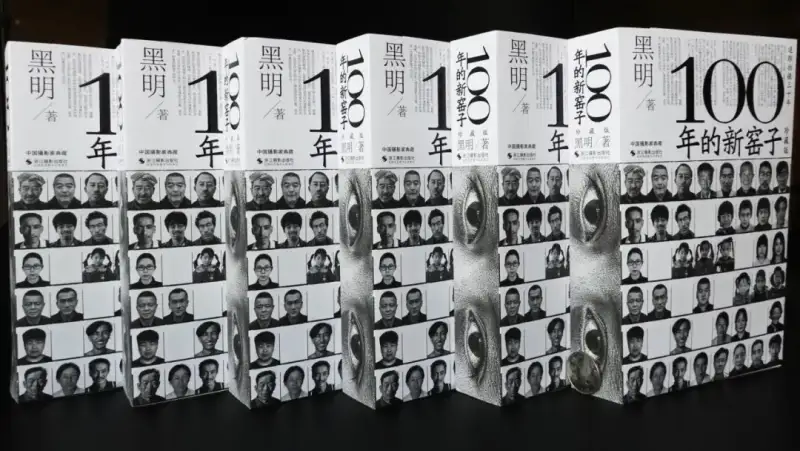

It is raining. The drops go tick-tock. A soft wind carries fine rain. I like this tingling feeling. I gently patted my freshly washed hair. The wet strands soaked the book in my hands. This book was a gift from Hei Ming. He signed it for my father in person when my father went to Beijing in 2008 to watch the Olympics. I quickly wiped the water drops off. Luckily, "100 Years of Xin Yaozi" was intact. Then I quickly showed my four big front teeth again. Hehe.
I never thought about how far 100 years is. I will probably not live to see myself a century from now. I often wonder about one question. Can Hei Ming live to 100? If he dies, who will keep recording the remaining years of Xin Yaozi? I turn the pages, one image after another. There are head-and-shoulders portraits and familiar faces. There are my parents and my cute childhood playmates. It all feels like it happened yesterday.

Bai Lianhua, 2016 © Hei Ming
When I open "100 Years of Xin Yaozi", I feel as if I returned to a home I had not visited for many years. The images show the country paths, the millet seedlings in the fields, the Jade Emperor Temple on Lianyun Mountain, and the neighbors who have already passed away. I start to remember a little. Then I remember more. I recall the day, more than 20 years ago, when a "dashing" young man called Hei Ming came to our village.
I remember the summer of 1996. I was nine, a silly little girl. After midday, my father brought home a man with a center-parted hairstyle. He held a camera. He asked my father how many people lived in the village, what their income was, and how they made money. My father answered his questions patiently. My father was Bai Zhengfeng. He was the party branch secretary of the village. Whenever an outsider came, he always greeted them warmly. I was curious. I ran out and told the other children that a "foreign man" had come to our house. He spoke so nicely. Back then I did not seem to understand that anyone could speak the national language besides the old local dialect of Xin Yaozi.
This "foreign man" asked questions of everyone he met. He raised his camera and took their pictures. Village children were very shy. They hid behind the adults one by one, because no one knew what he really wanted to do. The old men and women at the village gate gossiped behind his back. They asked where such a "foreign-style" man came from. A man with such long hair, neither man nor woman. The "foreign man" walked ahead, and we followed behind him. From time to time he turned around and smiled at us. We smiled too, but we did not dare laugh out loud. We just murmured among ourselves.
He acted as if everything he saw was a treasure. He kept taking pictures, click after click. But the adults avoided him as if he brought bad luck. They shouted loudly and called their children home, to stay away from him. In this way he walked and photographed along the way. On that first trip he took away the helpless images of many villagers. The gossipy women asked my father what that "foreign-style" man did. My father told them he was a reporter from Beijing. He wanted to take pictures of the villagers. He did not sound like a bad man. Yet no one imagined that this so-called "foreign man" was Hei Ming, the man who later wrote "100 Years of Xin Yaozi".
The villagers opposed an outsider taking their pictures because they knew almost nothing beyond their own families, their livestock, and their small plot of land. Many villagers regretted being photographed by the "foreign man". But they did not know what to do. From time to time some of them told my father, "Look at the person you brought here. He took our pictures away so casually." Even now I vaguely recall that, on Hei Ming's first visit, some people suspected he was a spy sent from Hong Kong. But I was too young to know what "spy" meant. I only heard the adults argue behind their backs about whether this "foreign man" was a spy.
Not long after, this "foreign man" came again. This time he carried many bags, full of things. He still had long center-parted hair. He found my father again. My father told him the villagers were a bit biased against him. He said it was normal for country people who had not seen much of the world. Hei Ming laughed out loud. He explained in detail that he was indeed a reporter and also a photographer. He told my father why he had come to Xin Yaozi to take pictures. As he talked, he pulled out a thick stack of photos. The photos showed the very people he had photographed on his last visit. My father called the young and old of the village to come and see. Everyone was curious. Giving photos for free was a wonderful thing. For those who did not come, Hei Ming delivered the photos door to door. That day he also took a pack of candy from his bag to share with the children. But we all rushed forward and grabbed every last piece. In the afternoon, my father put him up in the party activity room in the schoolyard, to make do for the night. He accepted happily. He always smiled easily, which made me feel he was real and comfortable. On this visit he truly began to photograph Xin Yaozi.
While Hei Ming stayed in the village, he woke up early every day. He went from house to house. He asked questions and wrote them down in a notebook. At first some villagers did not cooperate. After my father persuaded them, they mostly let him take pictures. My house was close to the school, so I always followed his movements out of curiosity. He ate instant noodles for all three meals. The smell was wonderful. I could only look from afar and imagine how good the noodles tasted. Day by day, the villagers seemed less on guard against him. Out of curiosity, I also liked to follow him and watch him take pictures in secret. Whenever he saw a person in a different pose, with a different background, or a different expression, he would take a picture. He often photographed people in odd poses, which made me laugh out loud. In my view, taking a picture meant sitting upright in a chair with both hands on the knees, or standing tall with head up, chest out, and hands on the hips. It was not like his casual way of shooting. I thought it was such a waste of film.

Bai Lianhua, 1998 © Hei Ming
The reason I remember the images in "100 Years of Xin Yaozi" so clearly is that I was there when Hei Ming shot most of them, about 70 to 80 percent. I was young then, but I knew how much effort each photo held. The villagers lived far apart, one family on the hillside and one in the gully. The paths back and forth were less than a meter wide. He carried a heavy tripod with his sturdy body and always held the camera in his hand. For him, the camera may have been his whole world. On this visit he photographed for quite a while. The sun tanned him dark and bright. In the eyes of the people of Xin Yaozi, this was perhaps the real Hei Ming. When he left Xin Yaozi the second time, everyone remembered that this "foreign man" was called Hei Ming.
After that, on May Day, Mid-Autumn Festival, National Day, New Year's Day, and the Spring Festival, he came to the village from time to time. As time passed, everyone grew close to him. The adults joked with him. Some invited him for meals. Some warm-hearted uncles even invited Hei Ming to drink liquor at their heated brick bed. He accepted generously. On summer nights he showed us movies and told us about the world outside. He often brought friends along. He told those who came with him about the hard life the villagers lived, the small wish in each heart, and how simple and honest these people were. It was as if every blade of grass and every tree here mattered to him. Each of his smiles was so bright, so warm, so at ease. I liked to hear his voice, witty and soft. Talking with him never felt like the distance between a country person and a big-city person.
Year after year, he did many good things for the village. He helped poor students. He helped villagers find work. He flew a long way to take ID photos for the villagers. He took memorial portraits for the elderly and photos of funerals in the village. Over these long years, he recorded every small detail of the villagers. He noted how many young women married out each year, how many new wives married in, how many children were born, and how many people died. He noted how the villagers' quality of life improved step by step. You can imagine how many days and nights of hard work and devotion this took. Every time he visited Xin Yaozi, he carried a sleeping bag. Back then I did not understand. I thought it was odd that anyone would sleep anywhere when such a nice small bed was available. Now I understand, just as a child watching him eat instant noodles thought it was the happiest thing in the world.
Hei Ming was like a good brother to my parents, and like a good uncle to me. But I did not like to call him uncle. In my eyes he was like an older brother, like family, like a friend. He was family to all the people of Xin Yaozi. This was true affection earned over time. The young and old of Xin Yaozi all liked him. They called him a kind, loyal, and straightforward man. Whenever people spoke of him, their faces were full of smiles.
He said I was a child he had watched grow up. He said I was curious, well-behaved as a child, and a bit odd. You could say I was his little shadow back then. That is why I was not afraid of him at all. I always felt he was warm and close. I could imagine the stories he told for three days and three nights. They were full of wonder and spirit.

Bai Lianhua cleaning Gao Tao's ears, 2002 © Hei Ming
After I finished "100 Years of Xin Yaozi", I noticed the book held photos of everyone else in the village, but not of me. I recall he took only one snapshot of me, which I still keep today. This is a small regret of mine. Maybe only in this way can my own specialness stand out, hehe. But I did ask Hei Ming about it on purpose. At first he did not believe the book had no photo of me. Only after he looked through his book again did he tell me that, when he edited the book, he had mistaken my sister-in-law for me. He promised that in the next edition he would definitely put me in the book. He also told me he had taken many photos of me and kept them well.
When I first met Hei Ming, I was an innocent child. Now my daughter is already 13. It was Hei Ming who gave her the name Chang Yue. The name carries the wish that she will always be happy. I am deeply moved. Is it not true? We never have time to reflect on time itself. So we can only go with nature. After all, from ancient times to now, no one can fight against the passing years.
The wheel of sun and moon is like a slow-flowing stream. It passes without a sound through the familiar mountains and gullies of the years. In a glance, Hei Ming and I have known each other for 30 years. I do not seem to have fancy words to describe, express, or polish these ten thousand-plus days between us. After all, most people taste the bitterness and pain, the warmth and emotion, the joy and happiness of the world within an ordinary life.
Now I am used to calling Hei Ming "boss". At first, when I called him "boss", he said it felt awkward. He asked me why I called him boss, but I did not tell him. After a long time he slowly started to answer to it. The word "boss" is a nickname I redefined for him over the later years. I honor him as "boss" purely out of my love for his long lenses and short lenses. I treasure his many cameras. I also admire his eye for what is true, good, and beautiful. Of course, what interests me most is still his interesting spirit.
When I closed "100 Years of Xin Yaozi", I cried. I thought of the days with face to the yellow earth and back to the sky. I thought of the hardships my parents endured. I thought of the old men, old women, uncles, and aunts in the village who died of illness. I thought of my childhood playmates. I thought of the mountain valley from 30 years ago. I thought of the home that raised me. Suddenly I felt that nothing could return to its original place. As a child we ate simple food and were very poor, but everyone still kept rushing about, fighting hardship with strength. In my eyes, these days of finding joy in hardship turned out to be my finest childhood.

Bai Zhengfeng and Guo Weisheng (couple), 2001 © Hei Ming
The years rush by. Everything in the past can only become a yesterday in my memory. Perhaps it is because, after tasting the sweet and the bitter, I have truly grown up and matured. The way I see things has changed fundamentally. That is why I can now truly understand what Hei Ming has pursued in his steady returns to Xin Yaozi over these years, and what he has left behind. "100 Years of Xin Yaozi" is in fact like a mirror. It reflects not only the simple life of the people of Xin Yaozi. More than that, it uses one small point to set off a whole picture, and it vividly portrays the real life of Chinese farmers today.
In my mind, Hei Ming is just such a simple, honest, and open photographer. He left me with many questions and many thoughts. Most of all, he gave me a beautiful memory, and a memory of 30 years. In fact, my image of Hei Ming is no longer limited to that of a Chinese documentary photographer. After these years of friendship, I see him as an ordinary person with rich experience. He calmly accepts the joy and sorrow that life gives him. He follows his own inner world and loves life. The only difference is that he has the strong willpower that you and I do not have. I think each person has a different rule for life, a different chosen direction, and a different road to walk. The level of happiness and the degree of hardship each person bears are naturally different. The reason he is loved and sought after by so many is that, behind it all, he must give far more persistence and exploration than ordinary people.
Compared with Hei Ming, I am a small ordinary person. His mind is like a blue sea, while mine is at most a single sunflower. But a sunflower is warm enough, and the leftover warmth it gives off is not bad. Though I am small, I have a strong heart that accepts myself. I do not think this is excessive self-comfort. I love myself very much. No one loves me more than I love myself. Only when a person has enough self-love can they love their family and warm the people around them. I have never regretted the good and bad things I experienced from childhood to adulthood. Whether it was joy or pain, it was all an experience for me. I also firmly believe the saying that people often quote: no road in life is walked in vain, and every step counts.
Hei Ming has a large magnetic field. It radiates to many people who love photography at home and abroad. I count myself as one of them. He never taught me how to use a camera or how to set the exposure. I just pressed the shutter in my own way to record the images I thought were beautiful. Over these years Hei Ming influenced me more or less, or perhaps it was my own interest. Though I was born in Xin Yaozi, a small village that once could not be found on the map of Shaanxi, my curiosity reached far beyond the shape of life itself.

Bai Zhengfeng, 2003 © Hei Ming
Hei Ming once told me that he first went to Tibet to take photos in 1988. Since then he crossed the Tibetan region countless times to visit and shoot. Though the photos he showed me were all black and white, they did not lessen my eagerness to go to Tibet. In 2009, I flew for the first time with a friend to Lhasa Gonggar Airport. On that trip to Tibet, the blue sky and white clouds along the way, the snow mountains and lakes, the grasslands and yaks, the Tibetan Guozhuang dance and the bright red cheeks of the plateau, and the grand Potala Palace all left a deep impression on me. I remember Hei Ming saying he had walked almost all of Tibet. I admire his spirit. Tibet is not a place everyone can endure. It is the mysterious Tibet. Yet over these years I crossed Tibet five times. I wrote many words and took many photos. Both my words and my photos earned Hei Ming's praise.
I was also interested in the long-hair Miao people of Suoga village, whom he photographed in Liupanshui, Guizhou. So on the sixth day of the first lunar month in 2016, I drove straight from Chongqing to Suoga with a few friends. When I met a Miao elder brother at a wedding banquet in the Suoga Miao village, I opened photos on my phone and asked him if he knew Hei Ming. He said he had seen him but forgot the name. He also recognized his own cousin sister in Hei Ming's photos. The road out of Liupanshui was especially bumpy. On the shaking journey, I called Hei Ming. He was shocked. He asked how I had got all the way to Suoga. We hung up the phone amid each other's laughter.
I remember reading long ago about the "landmine village" in Yunnan that Hei Ming wrote about on his blog. What impressed me most was that many villagers in the landmine village were disabled by explosions, and even some of the wild boars in the mountains had only three legs. The landmine village formed because of the Sino-Vietnamese border conflict. At that time, to stop the advance of Vietnamese troops, many landmines were laid near the front line. Though the war ended, these mines brought heavy harm to the local villagers. On my two trips to Yunnan, the one that impressed me most was in early August 2018, when I took my father and daughter to Yunnan. That time I planned to go to the landmine village where Hei Ming had photographed. My father asked what a landmine village was. After I told him, he feared I would be killed by a mine. He would not let me go no matter what. In the end I went to Puzhehei, which is also in Wenshan Prefecture. Puzhehei also carries the character "hei", but this hei is different from the hei in Hei Ming, because it has nothing to do with him. Though it sits by mountains and water, with ranges of peaks as if in a fairyland, and the sweet rural scenery still stays in my heart, what I longed for more was the landmine village that Hei Ming had visited.
Through Hei Ming's photo book "Exploring the Keriya People", I suddenly had the idea of traveling to Xinjiang. Going to Xinjiang was not only out of curiosity about the Taklamakan, but also because I had never been there. On New Year's Day 2017, I took my daughter, who was not yet six, and changed planes several times to travel to Hotan. I wanted to walk into Darya Boyi like Hei Ming and explore the mystery of the Keriya people. But traveling alone with my daughter was inconvenient, so in the end I gave up crossing that mysterious tribe the way Hei Ming did. I also visited Mohe, where Hei Ming had been. The many photos he took on the China-Russia border are still fresh in my memory. I also ventured into Manzhouli, Hailar, and Hulunbuir, places Hei Ming had visited. I even went to the Cold Pole Village, where I almost froze to death at minus 58 degrees Celsius.
Of Hei Ming's photography, I do not understand everything, but I know a great deal. So his work often pushes me to travel with my daughter. I hope to see places different from Xin Yaozi. I also hope my daughter can see a bigger sky and a bigger world than Yan'an. I do not want to leave my own childhood shortcomings and regrets to my daughter. I want to use a camera to keep more of her joy, because childhood passes in a flash. Compared with Hei Ming, my photography is not technique at all. Back then I only bought a camera that suited me within my means. I used it on trips to capture every moving scene. Even though I see things from a different angle and my depth of understanding falls short, I still enjoy it. I think I value freedom. Of course, this freedom rests on not harming basic life.
In the dealings between people, and in friendship between friends, I think the right depth is neither too deep nor too shallow. It is like the food on the table. Too bland has no taste, and too rich hurts the stomach. The plainer something is, the more it is worth savoring. Over these years, my contact with Hei Ming moved from early letters and landline calls, to QQ and mobile phones, and now to WeChat. For 30 years it has never stopped. In fact we do not contact each other very often. But as long as I send one word, "you there?", I will surely get a reply in the shortest time. I can talk about Hei Ming for three days and three nights, or even longer. Because between people, 30 years is no longer a simple number. Of course, after I grew up, the chances for us to meet became very few.

Bai Zhengfeng with Wang Jiali and Wang Yu, 2001 © Hei Ming
One afternoon in the spring of 2017, I suddenly got a call from Hei Ming. He said he had returned to Yan'an. I asked him to meet and talk at a cafe in the new city. I learned that in recent years he had done many more meaningful things. I learned that, in pursuit of photographing 100 veterans of the War of Resistance against Japan, he had traveled across the country and overseas, and endured much hardship. That day, besides telling his own story, he praised the articles I had posted online. He also gave me a set of his new book, "The War of 100 People, Volumes 1 and 2". We talked for a long time before we left. After years apart, he still had his center-parted hairstyle. His long hair did not pass his collar. His dress was plain and neat. When he smiled, two shallow dimples showed at the corners of his mouth. He still looked as comfortable as ever.
The last time I saw Hei Ming was in the late autumn of 2020. He and teacher Shi Xinde from Beijing drove to pick me up below my apartment. We traveled together back to the real place behind Hei Ming's "100 Years of Xin Yaozi", a village that belongs to both me and Hei Ming, a place full of my childhood memories. He said he wanted to walk door to door again, and I gladly agreed. Along the way we chatted as we walked. The click, click of teacher Shi's shutter suddenly brought back images from my childhood. Back then, a group of us children ran and jumped through the village while Hei Ming took our pictures. But now, for some reason, a ripple rose in my heart, along with a vague sense of loss and sadness. Indeed, 30 years passed in a flash. Deep down, I did not want to enter the adult world so soon. I also did not want to see more strands of white hair on Hei Ming's back. At this moment I could only sigh silently: flowers bloom again, but a person never returns to youth.
A few days ago, I made a special trip back to Xin Yaozi. Very few young people stayed in the village. Every able-bodied villager had left their hometown with wife and children to make a living in the city and seek a better life. Those who remained in the village were the old, the weak, the sick, and the disabled. On the window lattice of the abandoned cave dwellings, dense cobwebs were woven together. Especially at dusk, the village looked more and more desolate. Standing on the high hilltop and looking down at Xin Yaozi, it looked just like a kind old woman, waiting at her own doorway for her children to return soon. Faced with this natural change, I had no power to change it. I could only take the Xin Yaozi before my eyes as a black and white photo, so it would live forever in my life. The wind rustled the millet seedlings. The chirping of cicadas rose again in the distance. Two words floated faintly in my mind: remembrance.
This April, Hei Ming, as usual, drove alone from Beijing to Xin Yaozi once more. He visited Yan'an, Ganquan, Wanhua, Zaoyuan, and Xin Yaozi. He went from house to house and photographed more than 60 young people of Xin Yaozi born in the 1980s and 1990s. He also came to my house and took many photos of me. Looking at Hei Ming, he was no longer as young as he was 30 years ago. Looking at the new photos he took of me this time, I was no longer my old self either.
In northern Shaanxi, June alternates between a clear, cloudless sky and pouring rain. After I finished writing my memories of Hei Ming, I noticed my wet shirt was stuck to my back. But my heart felt completely at ease. A cool wind blew onto the balcony. Day broke, the rain stopped, the clouds parted, and the sun came out. It was like Hei Ming's bright smiling face, so clear and warm. The memory of 30 years is still like the rain that fell last night, foolishly accompanying me all the way.
Yan'an, June 18, 2025
Bai Lianhua graduated from Yan'an Normal School in 2006. She used to be an art teacher.

"100 Years of Xin Yaozi (Collector's Edition)"
Zhejiang Photography Publishing House
ISBN: 978-7-5514-5395-0
By Hei Ming
Format: large 32mo
Printed sheets: 16.25
Pages: 520
Introduction

A 100-year microcosm of one village, and a classic document of rural China.
The book has 6 chapters, 520 pages. It includes surveys, interviews, and reviews of nearly 200,000 words, as well as portraits, group photos, and documentary categories of 365 black and white and color photos.

This photo book focuses on Xin Yaozi, a mountain village in northern Shaanxi, China. The photographer Hei Ming followed and photographed it for 30 years, starting in 1996.
Hei Ming turns his lens on ordinary farmers who work hard, live simply, and strive to change their fate, and on their innocent and lovely children. Beside the powerful portraits, Hei Ming narrates in a plain but detailed way the real living conditions of these people and the dreams of their ancestors. Reading it, one is deeply moved by their simplicity, and inspired by their stubborn fight for a better wish.
Especially valuable is chapter five of the book. The "new portrait archive" that Hei Ming photographed in 2025 forms a sharp contrast with the old photos of Xin Yaozi taken 20 to 30 years ago. These photos bear witness not only to 30 years of change in Xin Yaozi, but also to more than a century of upheaval. They also show the most profound change that rural China has experienced in thousands of years.
"100 Years of Xin Yaozi" is the story of one mountain village, and a true portrait of rural China.
Academic endorsements
A photographic humanities book that weaves together
sociology, anthropology, and imaging

In the spring and summer of 1996, Hei Ming, then 32, came to Xin Yaozi. After decades of following and photographing, he finally published this "100 Years of Xin Yaozi (Collector's Edition)". This book is not only an "archive of Xin Yaozi", but also an "archive of northern villages", and above all an "archive of rural China".
-- Chen Xiaobo
Senior editor at Xinhua News Agency, former vice chairman of the Chinese Photographers Association
Through Hei Ming's work, we can see that every person living in Xin Yaozi is "this one" and not "that one". In other words, they are individuals. Whether humble or ordinary, this one is this one. In a certain sense, the people become truly human only when they change from a plural to a singular.
-- Sun Liping
Professor at Tsinghua University, doctoral supervisor
In this book, we can almost see the faces of all the villagers, and read the stories of their fates. As a Chinese person with 800 million fellow farmers, after reading this book I carry a whole village in my heart, and I understand the basic relationship between this village and the whole of society.
-- Wu Si
Writer and historian
Hei Ming's photos are so real that they move one to tears. In my view, Xin Yaozi is a vivid and living specimen. Through this specimen we can observe one current state of survival in rural China. We sigh for the fate of the most simple country people who live in an age of change. We also feel sincere awe for the endless life on the yellow earth.
-- Nie Zuoping
Writer
After Hei Ming stayed in Xin Yaozi for a long time, the villagers no longer cared about his camera. They calmly showed the ordinariness of their lives. When, one day, old man Wang lay naked in his bedding and no longer feared Hei Ming's camera, Hei Ming's images went beyond the power of the subjects themselves. With this book in hand, whether Hei Ming wants to surpass himself, or others want to surpass Hei Ming, it will truly take a great effort.
-- Pan Ke
Photographer and photography theorist
After Hei Ming finished photographing in Xin Yaozi, every time he personally enlarged photos in the darkroom to give to the villagers. He delivered them door to door. In almost every household, the picture frames held photos that Hei Ming had taken of them. They believed that the person in the photo was like a living person who could move. Perhaps this is the highest praise they gave to Hei Ming's photography.
-- Fu Yongjun
Master's supervisor at Zhejiang University of Media and Communications
Director of the Mud Art Museum (China Rural Photography Art Center)